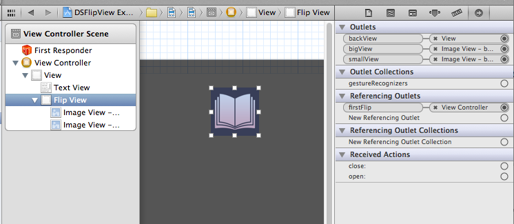
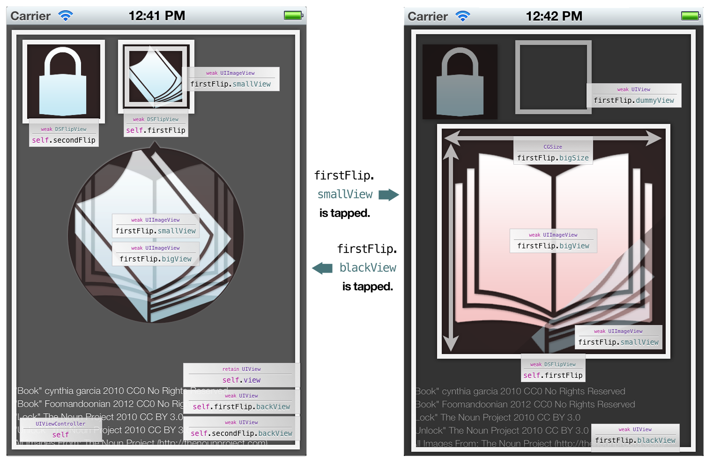

iPad Album Style Core Animation Flip View
DSFlipView lets you easily make an album flip view from iPad iPod app.

You can use DSFlipView with Storyboard.
QuartzCore.framework at the project summary.DSFlipView.h DSFlipView.m to your project.DSFlipView.backView is to the background (usually its super) view, smallView is to the view to be displayed first("closed"), and bigView is to the view next("opened").Some properties would be adjustable with code; check out below.
UIView *smallView = …;
UIView *bigView = …;
DSFlipView *flip = [[DSFlipView alloc] initWithFrame:CGRectMake(20, 20, 80, 80)];
flip.backView = self.view;
flip.smallView = smallView;
flip.bigView = bigView;
flip.duration = 1.0f;
flip.bigSize = (CGSize){200,250};
[self.view addSubview:flip];

| Properties | (Required) |
|---|---|
| backView | Background view, usually the superview. |
| smallView | Initially displayed view. |
| bigView | View to be displayed after. The position will be the center of backView. |
| Properties | (Optional) |
|---|---|
| duration | Duration of the flip animation. |
| bigSize | Size of bigView. Even if bigView is made with certain frame, it will be shrunken down/up to bigSize. |
| isOpened | Indicates the view is "opened", bigView is visible and smallView is not. |
| dummyView | View to be returned to the original point when the view is "opened". |
| blackView | View to accept user's gesture to "close" the view. |
This project is under MIT License.
Copyright (C) 2012 by Dongsung "Don" Kim kiding@me.com
Permission is hereby granted, free of charge, to any person obtaining a copy of this software and associated documentation files (the "Software"), to deal in the Software without restriction, including without limitation the rights to use, copy, modify, merge, publish, distribute, sublicense, and/or sell copies of the Software, and to permit persons to whom the Software is furnished to do so, subject to the following conditions:
The above copyright notice and this permission notice shall be included in all copies or substantial portions of the Software.
THE SOFTWARE IS PROVIDED "AS IS", WITHOUT WARRANTY OF ANY KIND, EXPRESS OR IMPLIED, INCLUDING BUT NOT LIMITED TO THE WARRANTIES OF MERCHANTABILITY, FITNESS FOR A PARTICULAR PURPOSE AND NONINFRINGEMENT. IN NO EVENT SHALL THE AUTHORS OR COPYRIGHT HOLDERS BE LIABLE FOR ANY CLAIM, DAMAGES OR OTHER LIABILITY, WHETHER IN AN ACTION OF CONTRACT, TORT OR OTHERWISE, ARISING FROM, OUT OF OR IN CONNECTION WITH THE SOFTWARE OR THE USE OR OTHER DEALINGS IN THE SOFTWARE.